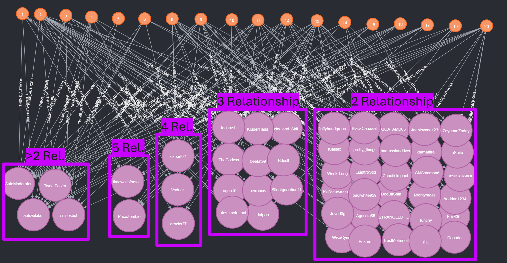

#check if theme 9 as indeed more negative sentiment
table_data <- df %>% filter(theme == 9) %>% group_by(sentiment_category) %>% summarise(n = n())
# Display the table using kable
kable(table_data, col.names = c("Sentiment Category", "Count"), caption = "Sentiment Category Counts for Theme 9")
#check if theme 9 as indeed more negative sentiment
table_data <- df %>% filter(theme == 2) %>% group_by(sentiment_category) %>% summarise(n = n())
# Display the table using kable
kable(table_data, col.names = c("Sentiment Category", "Count"), caption = "Sentiment Category Counts for Theme 9")Knowledge Graphs
Knowledge Graphs (KGs) provide a robust framework for representing, managing, and analyzing complex relationships between entities. They serve as valuable tools for uncovering patterns and gaining insights from interconnected datasets, such as Reddit discussions.
Neo4j
The initial construction of our Knowledge Graph was implemented in Neo4j. In this representation, we categorized the nodes as follows: authors in blue, comments in pink, themes in green, scores in orange, and sentiment in red.

As we increase the complexity of the graph by incorporating additional nodes and relationships, the relationships between different entities become more evident.

Further complexity reveals richer insights but also introduces challenges in interpreting the data visually.

Gephi
As the complexity increase neo4j becomes really non efficient so we can use Gephi to visualize the graph.
OpenOrd
Openord is a force-directed layout algorithm that is based on stress minimization. It is a good choice for large graphs.

We can ovserve here that the graph is really complex and hard to interpret.

Adding the scores nodes in blue did not help to understand the graph.
yifanHu
YifanHu is a force-directed layout algorithm that is based on the physical model of the system.
Themes
Using YifanHu on gephi we can observe here an interesting representation of the prevalance of different theme in our dataset.
We observe here that theme 9 which is about ‘Sports, Teams, and Player Discussions’ is the most prevalent for example.

Sentiment
adding sentiment in green (positive) and red (negative) complexifies the graph but can be useful to understand the sentiment of the different themes. We observe for example that theme 9 as a lot of ‘red’ which means that it is mostly negative compares to other themes.

Which is indeed verified.
Scores
the same can be done with score in shades of blue but it becomes a bit more complex to interpret.
changer couleur sur valeur extreme seulement, plus lisible
Similarities
Author-Theme
They can also for example be used to understand similarities.
It was tried here to identifies connection through theme between authors with a similaritie score found through an THEME_AUTHORS relationship on NEO4J.

We observe that the small dots (authors) on the left side have a lots of connection through different theme nodes.

For example here we observe the relationship of authors based on theme 1, which correspond to ‘Rules, Information, and Wiki Communitie’ finds authors similarities between ‘Automoderator’, ‘Autowikibot’, ‘totes_meta_bot’, and other it seems like non bot authors like ‘timewaitsforsome’, ect. It seems logical that those authors are connected through the same theme.
Now if we isolate theme 17 which is about ‘Politics, Science, and Star Wars’.

rajouter texte dessus
We observe that still Automoderator and autowikibot are part of it as they have a relation in all theme which is logical. But we also observe now techrush andd beefat99 and tweetposter for example.
We can continue for other themes but you get the point that I want to demonstrate that we can play with those knowledge graph to get insights from it.
Subreddits
Subreddit Knowledge Graphs help visualize and analyze relationships between subreddits, uncovering meaningful connections and thematic clusters. In this section, we explore the relationships in a subset of our dataset, providing insights and observations.
Disclaimer
The data presented is a lighter subset (approximately 1/5 of the previous dataset) that includes only subreddits we successfully scraped, found descriptions for, and identified related subreddits. This smaller dataset was easier to compute and provides more interpretable results.
Not all subreddits list related subreddits on their pages. For example, two of the most commented subreddits (indicated by the black circles at the bottom right) are only related to each other.
so the absence of a related subreddit for some subreddit does not diminish its importance in the graph.
To understand the graphs some nodes are colored to help understand the graph.
In the graph, the nodes are colored as follows: in blue are the subreddit with a score more than 4 (it allow us to see if some place in the graph have more high score subreddit than other) in red are the top 20 subreddit with the most comments (to see which subreddit are the most popular) in dark green are the top 20 subreddit who are the most related to other subreddit (subreddit who are the most connected to other subreddit)
Note that sometimes a subreddit can be in multiple categories.

 ## Clusters and Insights ### Sports Cluster
## Clusters and Insights ### Sports Cluster
A distinct sports cluster is visible, highlighting subreddits focused on athletic discussions and team-related themes.

Connections Between Themes
Some connections between seemingly unrelated topics are intriguing. For example, gardening and engineering are linked through biology and specifically mycology, with subreddits like “whatsthisplant” bridging these themes.

Nintendo Cluster
The Nintendo cluster is another noteworthy group, bringing together subreddits focused on games like Zelda, Metroid, Pokémon, NES, and other Nintendo-related topics.

Comics/Manga Cluster
A clear comics/manga cluster is also observed, demonstrating the grouping of subreddits around shared cultural interests.

Observations
The connections between subreddits generally align with expectations, validating the graph’s representation of thematic relationships.
Some subreddit themes are not perfectly classified due to reliance on automated methods, which explains the presence of many subreddits on the periphery of the graph. A manual classification approach might improve accuracy.
Subreddit Similarities
The following Cypher query, implemented in Neo4j, calculates similarity scores between subreddits by analyzing shared connections:
This query identifies and ranks related subreddits, providing insights into their relationships. We endup with this graph below :
As we can see we have a new way to represent the graph with their similarities.
Observations of similarities
The current dataset reveals clusters that are harder to interpret in the central region of the graph, but distinct thematic groups remain identifiable:
- Sports Cluster: Located at the bottom, it showcases connections between athletic and sports-focused subreddits.

- Cars/Racing Cluster: Found on the left, it groups subreddits centered on cars, motorsports, and racing.

Gaming Cluster: Positioned at the top, this cluster aggregates gaming-related subreddits.
Science and Communities Cluster: Slightly above and to the right, this cluster includes discussions about science, life advice, and community engagement.

Conclusion: In this graph, the top related subreddits are more dispersed and less connected to the clusters compared to the previous graph. We knew that the top related subreddits are not always the most popular or those with the highest scores. It is also notable that some subreddits have no connections to others within the graph.